library(astsa) # acf2() e sarima()
library(forecast) # forecast() e autoplot()
library(ggplot2) # carregar temas para a função autoplot()Introdução
Neste post apresento como estimar um modelo SARIMA simples no R usando os pacotes astsa e forecast. O pacote astsa foi elaborado pelos autores do livro Time Series Analysis. Já o forecast foi desenvolvido por Rob. Hyndman, autor do livro Forecasting: Principles and Practice.
O modelo
O SARIMA adiciona sazonalidade estocástica multiplicativa ao modelo ARIMA. Lembre-se que o modelo ARMA(p,q) geral é da forma: \[\begin{equation} y_{t} = \mu + \phi_{1}y_{t-1} + \phi_{2}y_{t-2} + \dots + \phi_{p}y_{t-p} + \epsilon_{t} + \theta_{1}\epsilon_{t-1} + \theta_{2}\epsilon_{t-2} + \dots + \theta_{q}\epsilon_{t-q} \end{equation}\] Podemos reescrever a expressão acima usando o operador defasagem e os polinômios \[\begin{align} \phi(L) & = 1-\phi_{1}L - \phi_{2}L^{2} - \dots - \phi_{p}L^{p} \\ \theta(L) & = 1+\theta_{1}L + \theta_{2}L^{2} + \dots + \theta_{q}L^{q} \end{align}\] Assim a expressão pode ser resumida como \[\begin{equation} \phi(L)y_{t} = \mu + \theta(L)\epsilon_{t} \end{equation}\] O modelo ARIMA tira diferenças \(d\) de \(y_{t}\): \[\begin{equation} \phi(L)(1-L)^{d}y_{t} = \theta(L)\epsilon_{t} \end{equation}\] A princípio não há restrição sobre o valor de \(d\) mas na prática sabemos que \(d = 1\) ou \(d = 2\). Agora vamos definir os polinômios sazonais: \(\Phi(L^{s}) = 1-\Phi_{1}L^{s} - \Phi_{2}L^{2s} - \dots - \Phi_{p}L^{Ps}\) e \(\Theta(L^{s}) = 1+\Theta_{1}L^{s} + \Theta_{2}L^{2s} + \dots + \Theta_{q}L^{Qs}\). Ou seja, digamos que a série \(y_{t}\) seja mensurada mensalmente e apresente alguma sazonalidade anual. \(y_{t}\) pode ser, por exemplo, a receita de vendas de uma empresa de varejo. É provável que a receita no mês de dezembro seja mais alta que a média do ano. Como isto se repete todo ano vamos encontrar um padrão anual nos dados que deve ser modelado. Neste exemplo, como \(y_{t}\) é mensal temos que \(s = 12\) nos polinômios sazonais. Logo teremos que: \[\begin{align} \Phi(L)y_{t} & = 1 + \Phi_{1}y_{t-12} + \Phi_{2}y_{t-24} + \dots + \Phi_{p}y_{t-Ps}\\ \Theta(L)\epsilon_{t} & = 1+\Theta_{1}\epsilon_{t-12} + \Theta_{2}\epsilon_{t-24} + \dots + \Theta_{q}\epsilon_{t-Qs} \end{align}\] Podemos então montar modelos SARMA(p,q)(P,Q)[s]. Para tornar a notação mais clara vamos escrever o caso em que \(y_{t} \sim \text{SARMA}(2,1)(1,3)[12]\) \[\begin{equation} y_{t} = \phi_{1}y_{t-1} + \phi_{2}y_{t-2} + \Phi_{1}y_{t-12} + \epsilon_{t} + \theta_{1}\epsilon_{t-1} + \Theta_{1}\epsilon_{t-12} + \Theta_{2}\epsilon_{t-24} + \Theta_{3}\epsilon_{t-36} \end{equation}\] De forma geral, temos que: \[\begin{equation} \Phi(L^{s})\phi(L)y_{t} = \mu + \theta(L^{s})\theta(L)\epsilon_{t} \end{equation}\] Finalmente, de forma análoga ao ARIMA, tiramos diferenças sazonais \(D\) para chegar em: \[\begin{equation} \Phi(L^{s})\phi(L)(1-L)^{d}(1-L^{s})^{D}y_{t} = \mu + \theta(L^{s})\theta(L)\epsilon_{t} \end{equation}\] Assim, como na análise do ARIMA o procedimento para identificação parte da comparação entre o correlograma empírico com as correlações teóricas do processo SARMA(p,q)(P,Q)[s]. Digamos, por exemplo, que a série de interesse \(y_{t}\) siga um SARIMA(p,0,q)(P,1,Q). Então, temos que
\[ x_{t} = (1-L^{12})y_{t} \]
a série diferenciada sazonalmente, segue um SARMA(p,q)(P,Q). A partir das funções de autocorrelação e autocorrelação parcial de \(x_{t}\) podemos tentar recuperar o verdadeiro valor de \(p\), \(q\), \(P\) e \(Q\).
Exemplo: passagens aéreas
Primeiro vamos carregar os pacotes.
Vamos analisar o comportamento da demanda por passagens aéreas internacionais. Este é um exemplo clássico estudado em Box & Jenkins (1976). Esta séria apresenta tanto uma tendência de crescimento como uma clara sazonalidade.
autoplot(AirPassengers) +
geom_point(shape = 21) +
labs(x = "", y = "Passagens aéreas (milhares)",
title = "Demanda mensal de passagens aéreas internacionais",
caption = "Fonte: Box & Jenkins (1976)") +
theme_bw()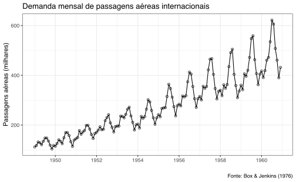
Uma maneira interessante de visualizar a sazonalidade da série é “empilhando” os ciclos. No caso, parece haver uma sazonalidade que se repete a cada ano. A função ggseasonplot do pacote forecast facilita esta visualização. Os meses de junho, julho e agosto parecem sempre ter valores mais elevados. De fato, estes são os meses do verão no hemisfério norte e da alta estação do turismo.
# Gráfico mensal
ggseasonplot(AirPassengers) +
ggtitle("Sazonalidade") +
labs(x = "") +
scale_colour_discrete(name = "Ano") +
theme_bw()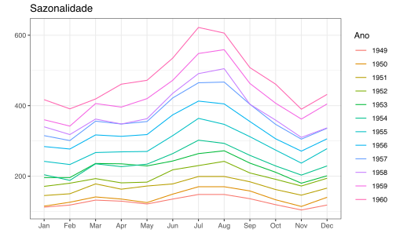
Identificação e tranformações
Como a variância da série cresce ao longo do tempo aplico uma transformação log nos valores da série. Seja \(y_{t}\) nossa série. Então fazemos \(ly_{t} \equiv \text{log}(y_{t}).\)
# Aplica transformação log (logaritmo natural)
ly <- log(AirPassengers)
# Gráfico
autoplot(ly) +
geom_point(shape = 21) +
labs(x = "",
y = "Passagens aéreas (log)",
title = "Demanda mensal de passagens aéreas internacionais") +
theme_bw()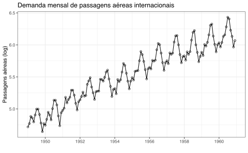
Para testar a acurácia do modelo vamos remover algumas das últimas observações. Estas serão testadas contra as previsões do modelo. Aqui sigo a nomenclatura de train (treino) e test (teste). O gráfico abaixo permite visualizar esta divisão, onde os valores em vermelho foram excluídos da nossa amostra.
train <- window(ly, end = c(1957, 12))
test <- window(ly, start = c(1958, 1))
autoplot(train) +
autolayer(test) +
theme_bw() +
theme(legend.position = "bottom")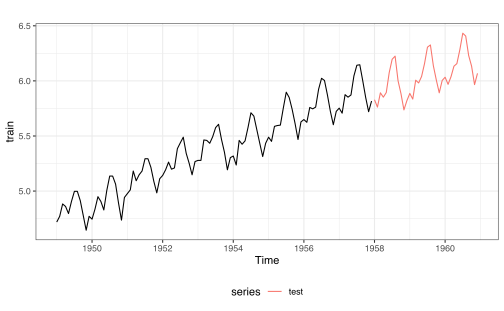
Tirando a primeira diferença da série removemos a sua tendência de crescimento. Fazemos \(dly_{t} \equiv (1-L)ly_{t} = ly_{t} - ly_{t-1}\) usando a função diff(). Note pelo gráfico que ainda parece haver forte sazonalidade na série.
# Tira a primeira diferença da série
dly <- diff(train)
autoplot(dly) +
ggtitle("Primeira diferença do log da série") +
theme_bw()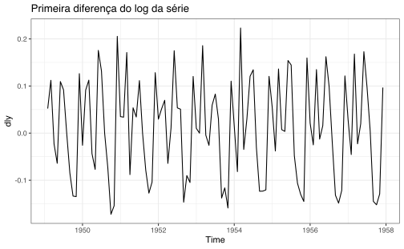
Podemos ver isto mais claramente na análise do correlograma da série diferenciada. No gráfico abaixo, os “lags” seguem a periodicidade da série, isto é, cada “lag” representa o equivalente a 12 meses. Parece haver uma forte correlação entre \(dly_{t}\) com \(dly_{t-12}, dly_{t-24}, \dots, dly_{t-12k}\) com \(k = 1, 2, \dots\).
# Gráfico da FAC e FACP
acf2(dly)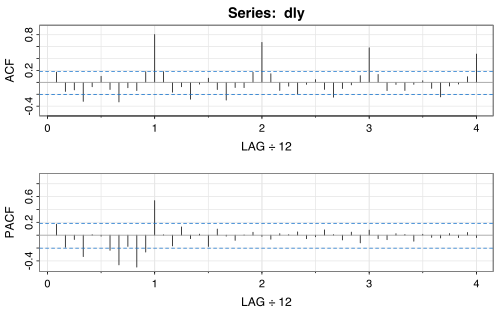
Agora tiramos uma diferença sazonal de 12 meses. A série resultante, \(sdly_{t}\) fica: \[\begin{align} sdly_{t} \equiv (1-L^{12})dly_{t} & = (1-L^{12})(1-L)ly_{t} \\ & = (1 - L^{12} - L + L^{13})ly_{t} \\ & = ly_{t} - ly_{t-1} - ly_{t-12} + ly_{t-13} \end{align}\]
Abaixo temos o correlograma de \(sdly_{t}\). A primeira defasagem é significativa tanto no ACF como no PACF. Além disso a 12ª defasagem também é significativa em ambos. Assim, vamos primeiro tentar um modelo de “ordem máxima” SARIMA\((1,1,1)(1,1,1)[12]\). A partir deste modelo, vamos tentar estimar outros de ordens mais baixas para evitar o problema de sobreparametrização.
# Tira a primeira diferença sazonal da série
sdly <- diff(dly, 12)
# Gráfico da FAC e FACP
acf2(sdly)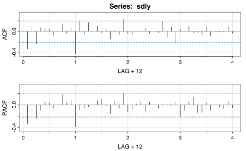
Estimação
A equação do modelo que estamos estimando é: \[
(1 - \phi L)(1 - \Phi L^{12})(1 - L)(1 - L^{12})ly_{t} = (1 + \theta L)(1 + \Theta L^{12})\epsilon_{t}
\] Vamos o usar o comando sarima do pacote astsa. Note que os resíduos do modelo parecem se comportar como ruído branco, indicando que nosso modelo está bem ajustado.
(m1 <- sarima(p = 1, d = 1, q = 1, P = 1, D = 1, Q = 1, S = 12, xdata = train))initial value -3.031632
iter 2 value -3.170590
iter 3 value -3.246467
iter 4 value -3.246688
iter 5 value -3.247295
iter 6 value -3.247539
iter 7 value -3.247841
iter 8 value -3.248283
iter 9 value -3.248794
iter 10 value -3.249345
iter 11 value -3.249360
iter 12 value -3.249378
iter 13 value -3.249379
iter 14 value -3.249380
iter 15 value -3.249381
iter 16 value -3.249381
iter 17 value -3.249381
iter 17 value -3.249381
iter 17 value -3.249381
final value -3.249381
converged
initial value -3.248923
iter 2 value -3.252561
iter 3 value -3.258267
iter 4 value -3.265627
iter 5 value -3.267071
iter 6 value -3.267585
iter 7 value -3.267745
iter 8 value -3.268029
iter 9 value -3.268401
iter 10 value -3.268494
iter 11 value -3.268499
iter 12 value -3.268506
iter 13 value -3.268511
iter 14 value -3.268511
iter 15 value -3.268511
iter 15 value -3.268511
iter 15 value -3.268511
final value -3.268511
converged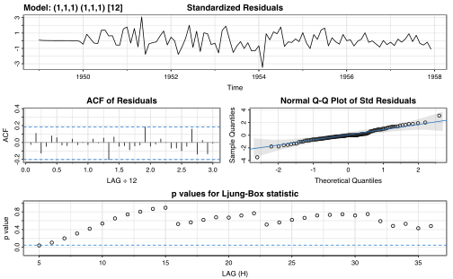
$fit
Call:
arima(x = xdata, order = c(p, d, q), seasonal = list(order = c(P, D, Q), period = S),
include.mean = !no.constant, transform.pars = trans, fixed = fixed, optim.control = list(trace = trc,
REPORT = 1, reltol = tol))
Coefficients:
ar1 ma1 sar1 sma1
0.2565 -0.6243 -0.0599 -0.5574
s.e. 0.2759 0.2289 0.1765 0.1670
sigma^2 estimated as 0.001367: log likelihood = 175.71, aic = -341.42
$degrees_of_freedom
[1] 91
$ttable
Estimate SE t.value p.value
ar1 0.2565 0.2759 0.9299 0.3549
ma1 -0.6243 0.2289 -2.7271 0.0077
sar1 -0.0599 0.1765 -0.3392 0.7353
sma1 -0.5574 0.1670 -3.3380 0.0012
$AIC
[1] -3.593882
$AICc
[1] -3.589203
$BIC
[1] -3.459467Para evitar o problema de sobreparametrização (overfitting) temos que tentar ajustar modelos de ordens similares, porém mais baixas. Este processo costuma ser iterativo, isto é, na base da tentativa e erro seguindo algum critério de informação (i.e.: AIC, AICc, BIC, etc.). Depois de tentar vários modelos diferentes chegamos, por exemplo, no SARIMA\((0,1,1)(0,1,1)[12]\). A equação do modelo pode ser expressa como: \[ (1 - L)(1 - L^{12})ly_{t} = (1 + \theta L)(1 + \Theta L^{12})\epsilon_{t} \]
Novamente, os resíduos do modelo indicam que ele está bem ajustado aos dados.
m2 <- sarima(p = 0, d = 1, q = 1, P = 0, D = 1, Q = 1, S = 12, xdata = train)initial value -3.047456
iter 2 value -3.251231
iter 3 value -3.251514
iter 4 value -3.268396
iter 5 value -3.270049
iter 6 value -3.270196
iter 7 value -3.270197
iter 8 value -3.270198
iter 8 value -3.270198
iter 8 value -3.270198
final value -3.270198
converged
initial value -3.263453
iter 2 value -3.264133
iter 3 value -3.264159
iter 4 value -3.264160
iter 4 value -3.264160
iter 4 value -3.264160
final value -3.264160
converged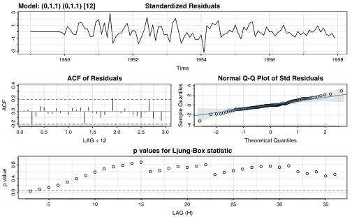
m2$fit
Call:
arima(x = xdata, order = c(p, d, q), seasonal = list(order = c(P, D, Q), period = S),
include.mean = !no.constant, transform.pars = trans, fixed = fixed, optim.control = list(trace = trc,
REPORT = 1, reltol = tol))
Coefficients:
ma1 sma1
-0.3864 -0.5885
s.e. 0.1097 0.0927
sigma^2 estimated as 0.001383: log likelihood = 175.3, aic = -344.59A estimativa tem a forma:
\[ (1 - L)(1 - L^{12})ly_{t} = (1 - 0.3864 L)(1 - 0.5885 L^{12})\epsilon_{t} \]
Previsão
Para computar as previsões do modelo usamos a função sarima.for. Aqui podemos comparar as previsões do modelo (construindo usando apenas as observações dentro de train) com as observações. Esta função automaticametne retorna um gráfico com as previsões fora da amostra.
pred <- sarima.for(train, n.ahead = length(test),
p = 0, d = 1, q = 1, P = 0, D = 1, Q = 1, S = 12)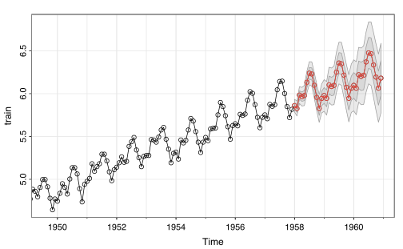
Podemos construir um gráfico que inclui as observações reservadas no test usando as seguintes funções base do R.
plot.ts(pred$pred, col = "red", ylim = c(5.7, 6.5),
ylab = "",
main = "Previsão do modelo SARIMA(0, 1, 1)(0, 1, 1)[12]")
lines(test, type = "o")
legend("topleft", legend = c("Previsto", "Observado"), lty = 1,
pch = c(NA, 1), col = c("red", "black"))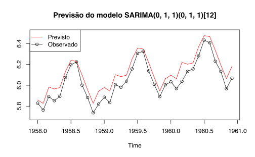
Como comentado em outro post, pode-se produzir visualizações mais elegantes usando o ggplot2, mas o pacote não “conversa” bem com os objetos típicos de séries de tempo. Um jeito de contornar isto é usando a função autoplot() do pacote forecast. Abaixo, reestimo o modelo usando a função arima. Este passo é necessário para usar a função autoplot().
m <- arima(train, order = c(0, 1, 1), seasonal = list(order = c(0, 1, 1), period = 12))Agora podemos verificar a qualidade das nossas previsões. O gráfico abaixo foi construído funções base do R. A linha azul representa as previsões do modelo SARIMA especificado acima, enquanto que a linha vermelha representa as observações. As áreas sombreadas são intervalos de confiança: o mais escuro é de 80% e o mais claro de 95%.
plot(forecast(m, h = length(test)))
lines(test, col = "black")
legend("topleft",
legend = c("Previsto", "Observado"),
lty = 1, col = c("red", "black"))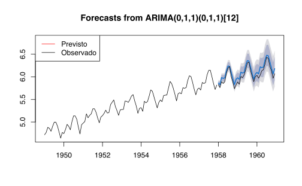
Usando o autoplot temos o seguinte resultado:
autoplot(forecast(m, h = length(test)), include = 50) +
autolayer(test) +
labs(x = "", y = "") +
theme_bw() +
theme(legend.position = "none")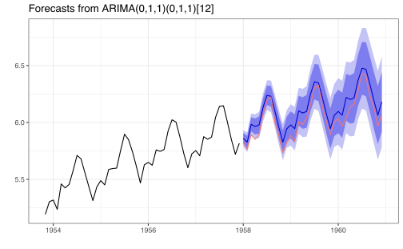
Conclusão
Os modelos SARIMA são uma extensão aos modelos ARIMA que acrescentam um componente sazonal nos dados. O exemplo acima mostrou uma série com frequência mensal, mas a mesma lógica se aplica a séries com sazonalidade semestral, trimestral, etc.
Estes modelos geram boas previsões e são fáceis de estimar o que explica a sua popularidade.